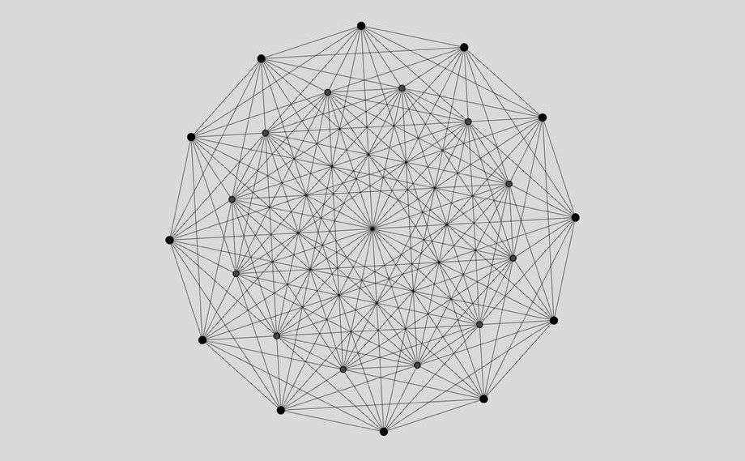

Lattice points
0241227
Number theory studies the properties and relationships of integers.
Number is the ruler of forms and ideas, and the cause of gods and daemons.Pythagoras
The concept of number is one of the first things we learn, yet many of its properties remain a mystery. These are some of the still open problems in number theory:
108.53 kB